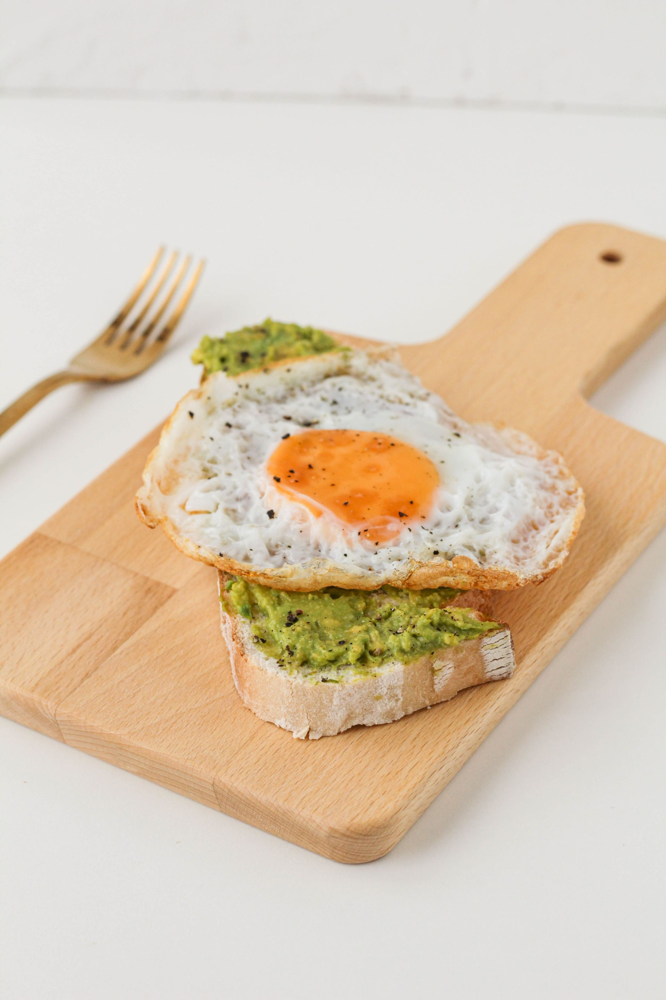

Avocado Toast with Egg

Ingredients
- 1x teaspoon butter.
- 2x eggs.
- 2x slices multigrain bread.
- 1x ripe avocaddo
- 1x teaspoon lemon juice, or to taste.
- Sea salt to taste.
- Ground black pepper to taste.
Description:
- Prepping the Eggs:
Melt the butter in a skillet over medium-low heat. Crack eggs into the skillet side by sid and cook until eggs are white on the bottom layer and firm enough to flip, 2 to 3 minutes. Then, flip the eggs trying not to crack the yolk, and cook until egg reaches desired doneness, 2 to 5 minutes more.
- Toast the bread:
Toast the bread slices to desired doneness, 3 to 5 minutes.
- Prepare the avocado:
Mash the avocado in a bowl, stir in lemon juice, cayenne pepper, and sea salt. Spread avocado mixture onto toast. Top with fried egg and season with sea salt and pepper.
Back